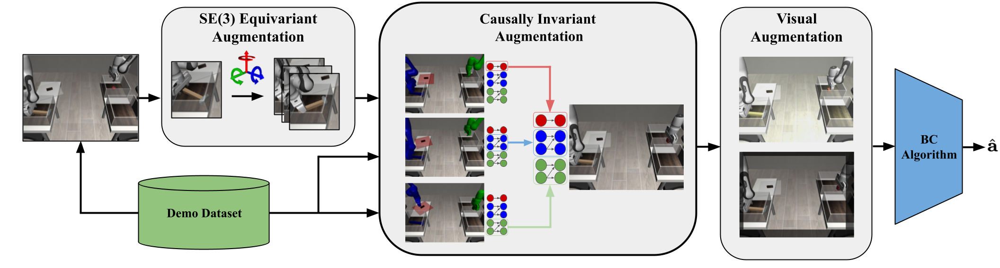

RoCoDA consists of three stages: SE(3) equivariant state-action augmentation, causal augmentation, and visual augmentation. We first apply rigid body transformations to object poses and identically transform the corresponding actions. Then, we resample subsets of the environment state that are causally invariant to the action. Lastly, we apply several standard augmentations, including random resize/crop, color jitter, and state noise, all of which leverage invariance aspects of the observation with respect to actions
We use the SE(3) equivariance of robotic actions to object poses, such that when we apply a transformation to an object’s pose, we can adjust the actions accordingly, preserving the task's structure.
Causally dependent entities are grouped into the same partition of the state space. For each partition, states are sampled from different trajectories within the same causal phase, ensuring consistency between causally dependent entities.
Independently sampling from these groups creates new states that maintain the causal structure, leading to valid trajectories for the policy to learn from. A simulator is used to sample object states from these partitions, which are then rendered and input into an image-conditioned behavior cloning algorithm. Building on previous work, we use traditional data augmentation techniques on the observations to improve robustness.